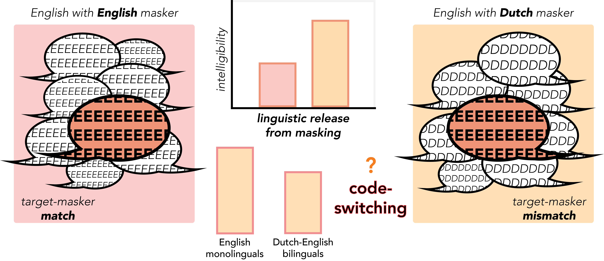
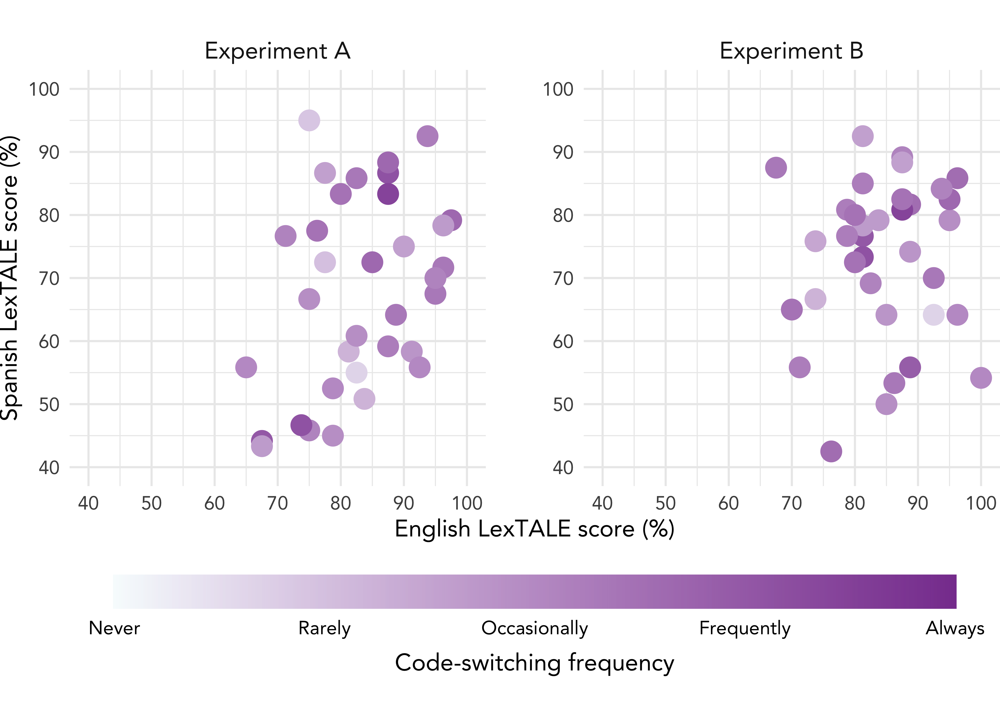
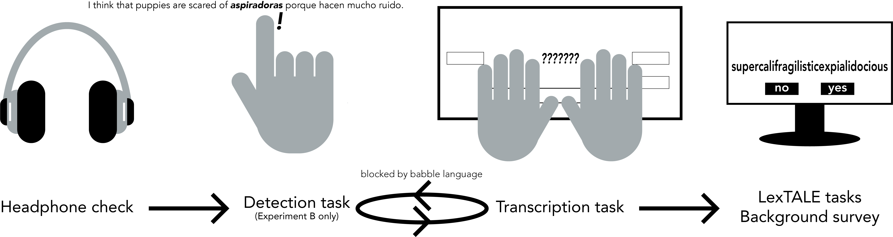
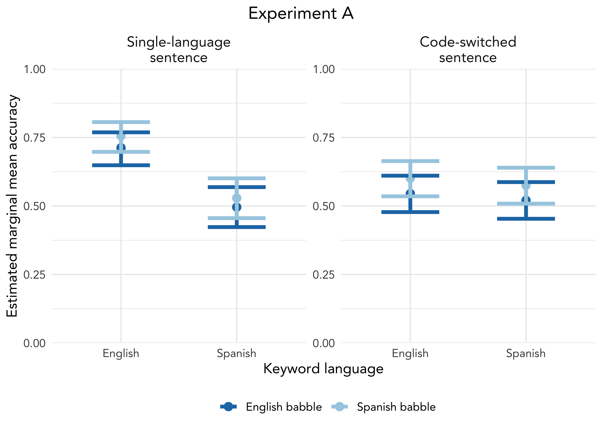
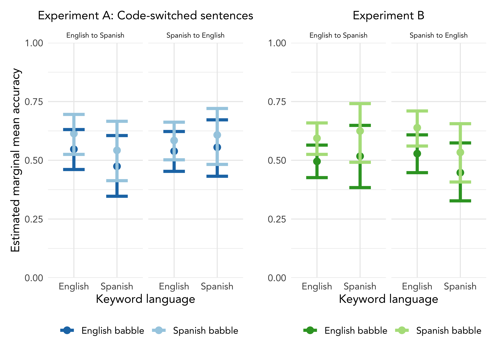
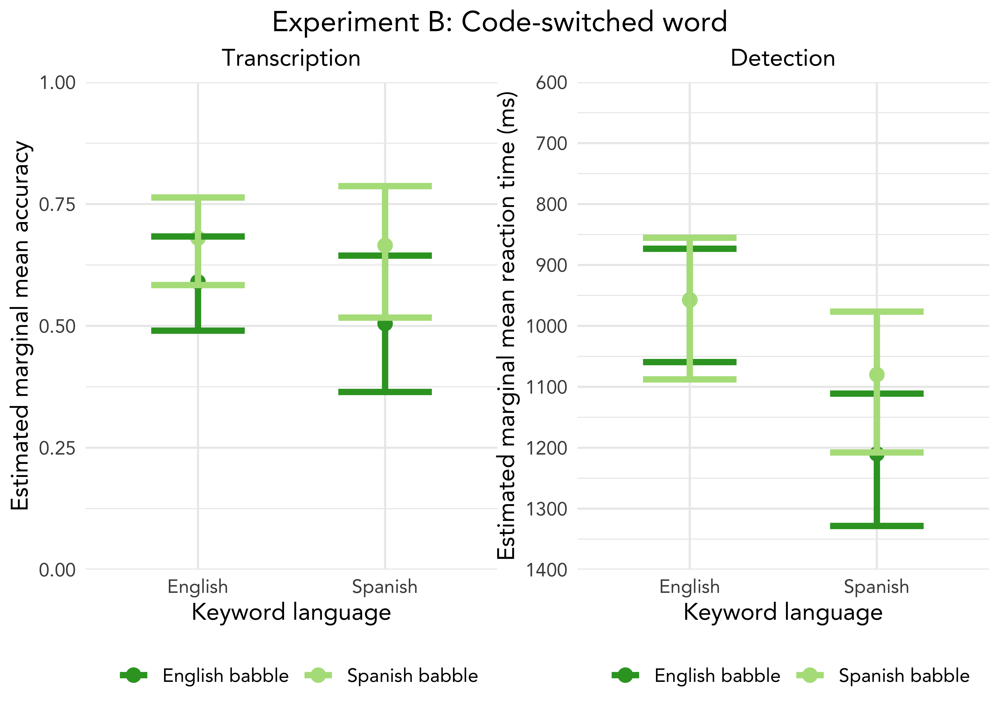

Sentential context impacts bilingual speech-in-speech recognition
Holly A. Zaharchuk, Victoria Medina, Sarah Paterno, Navin Viswanathan, Janet G. Van Hell
Department of Psychology & Center for Language Science
The Pennsylvania State University
Research background

Participants

Procedure

Analyses
Accuracy benefit for English versus Spanish decreases by ~20% in code-switched versus single-language sentences

Removing single-language stimuli shifts transcription advantage from pre-switch keywords to post-switch keywords

Keyword accuracy (1,0) and reaction time data analyzed via linear mixed-effects models controlling for keyword position, language dominance (difference between English and Spanish LexTALE scores), and code-switching frequency (mean of L1-switch, L2-switch, and contextual switch responses on the bilingual switching questionnaire; see Rodriguez-Fornells et al., 2012)
Code-switched Spanish words are more susceptible to masker language than code-switched English words

Stimulus examples
| A | Single-language | I think that puppies are scared of vacuums because they are loud. | Creo que los cachorros tienen miedo de las aspiradoras porque hacen mucho ruido. | |
| B | Code-switched | Creo que los cachorros tienen miedo de los vacuums because they are loud. | I think that puppies are scared of aspiradoras porque hacen mucho ruido. |
Result summary
| A | 1 | Transcription (accuracy) | Sentence | Single-language versus Code-switch | Incongruent Target-Masker benefit attenuated by code-switching | Target-Context interaction with Masker main | |
| B | 2-3 | Spanish-English versus English-Spanish code-switches | Incongruent Target-Masker benefit | ||||
| 4 | Word | Congruent Target-Masker benefit for Spanish | |||||
| 5 | Detection (RT) |
References and acknowledgements
Brouwer, S., Van Engen, K. J., Calandruccio, L., & Bradlow, A. R. (2012).
Fernandez, C. B., Litcofsky, K. A., & Van Hell, J. G. (2019).
Lecumberri, M. L. G., Cooke, M., & Cutler, A. (2010).
Rodriguez-Fornells, A., Krämer, U. M., Lorenzo-Seva, U., Festman, J., & Münte, T. F. (2012).
Viswanathan, N., Kokkinakis, K., & Williams, B. T. (2018).
Holly A. Zaharchuk: hzaharchuk@psu.edu
University Graduate Fellow (UGF)